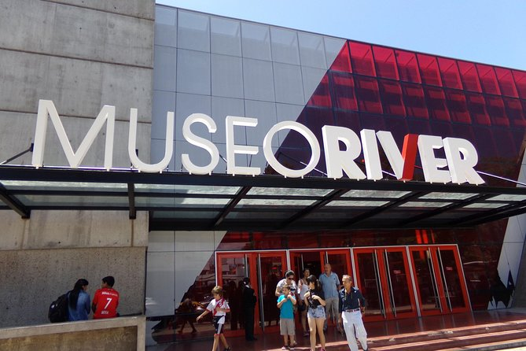
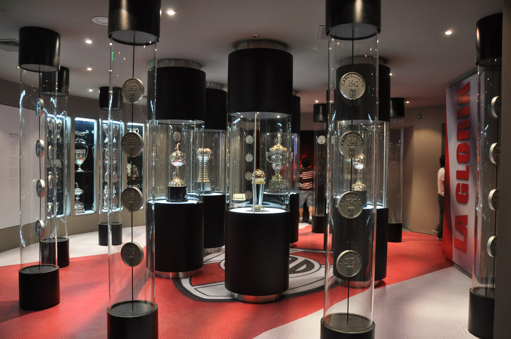
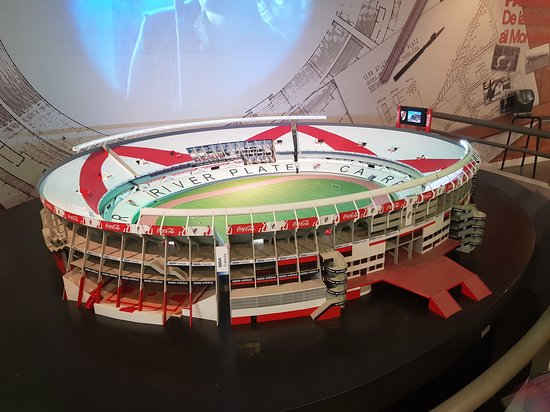
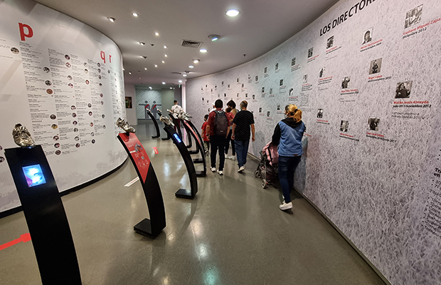
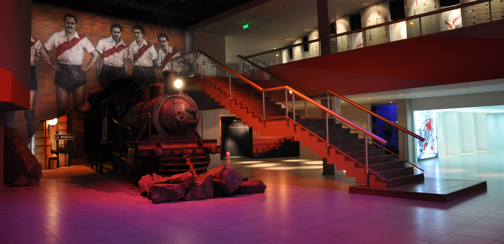
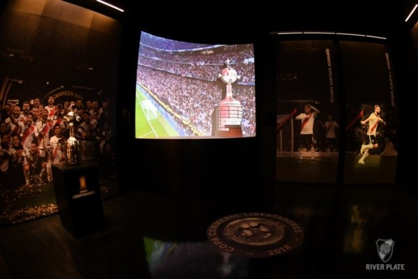
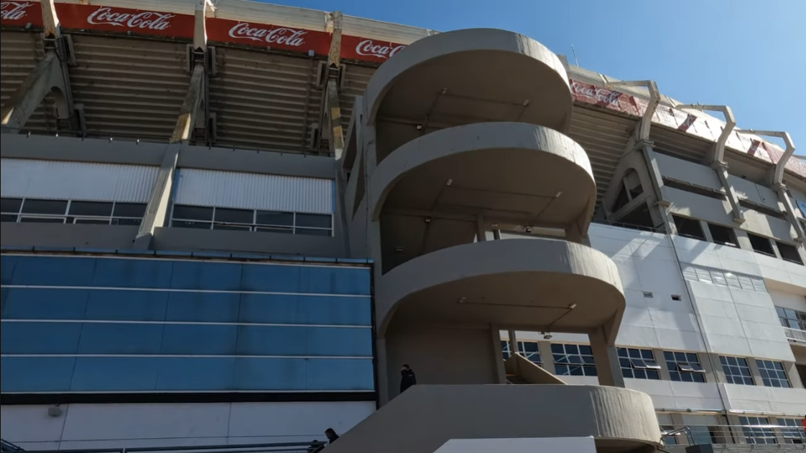
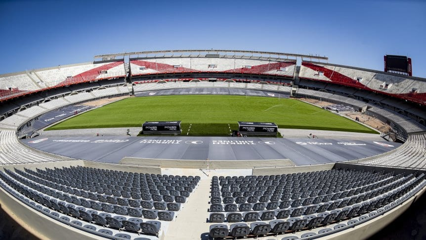

Entrada al Museo de River Plate

Tunel en el cual comienza el tour por nuestro Museo

Al final del tunel se encontraran con las copas

Saliendo del salon de copas, se encuentra una maqueta a escala de nuestro estadio

Seguimos por un pasillo lleno de TODOS los nombres de los jugadores que pasaron por el club

El ferrocarril que se ubica en la planta baja hace referencia a "La maquina"

Abajo tenemos mas trofeos y un sector dedicado la copa eterna, ganada a Boca Juniors en el Santiago Bernabeu

Luego del tour por el museo, ingresamos al estadio.

El tan ansiado ingreso al Mas Monumental
LES DEJAMOS UN VIDEO DONDE SE MUESTRA EL TOUR POR EL MUSEO, PUBLICADO POR EL YOUTUBER "FEDERICO MX SUDAMERICA"